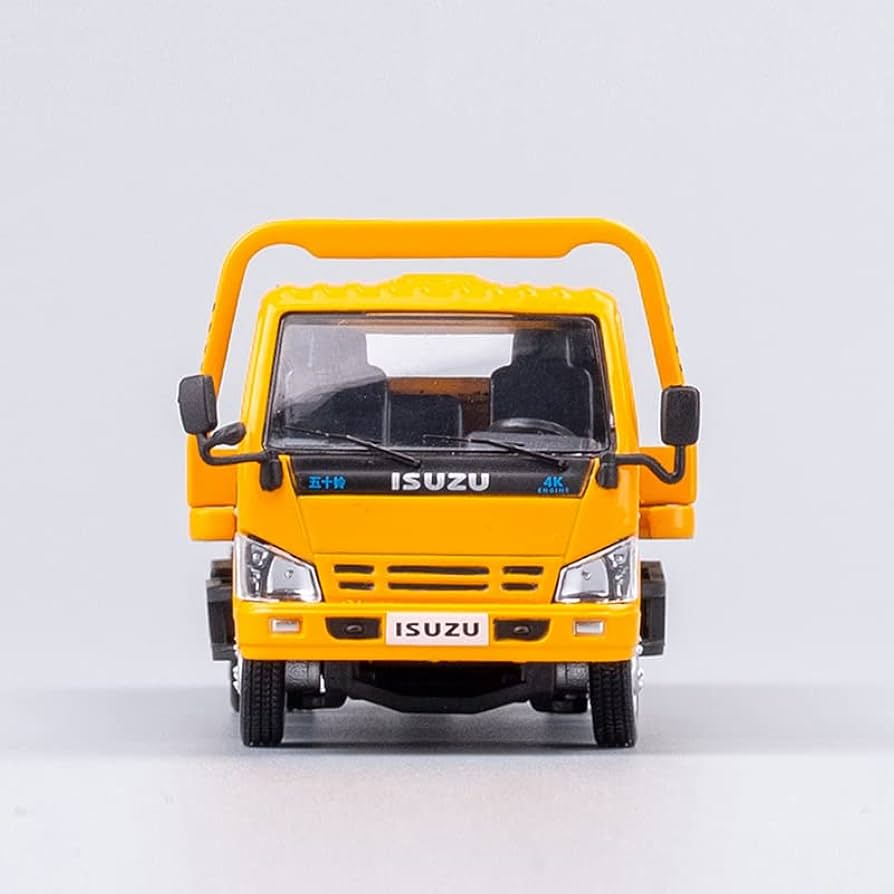

Un camión es un vehículo motorizado diseñado para el transporte
de productos y mercancías. A diferencia de los automóviles, que
suelen tener una construcción monocasco, muchos camiones se
construyen sobre una estructura resistente denominada chasis
(bastidor).
La mayor parte de la estructura está integrada por un chasis portante,
generalmente un marco estructural, una cabina y una estructura
(o caja) para transportar la carga.

La cabina es un espacio cerrado donde se sienta el conductor y el acompañante o segundo conductor en el caso de usar doble tripulación. En los camiones con morro, el camarote es un espacio adjunto a la cabina donde el conductor descansa mientras no puede conducir; es propio de los camiones articulados con tractocamión y semirremolque. En el caso de los camiones COE, la cabina suele conformar un único habitáculo compartiéndose éste como zona de conducción y zona de descanso.
Últimamente se están usando camiones de gas con motor de ciclo Otto (que son menos contaminantes) y también se están empezando a introducir los camiones eléctricos sobre todo en unidades de reparto en ciudad o en camiones para realizar cortos recorridos.
Existen camiones con Transmisión automática con convertidor de par
para su uso en transportes especiales, arrastre de grandes cargas
o camiones orientados a la minería o a grandes movimientos de tierra
en obras de construcción o para otras funciones específicas.
Los camiones típicos para carretera, obras, reparto o transporte
general suelen usar la configuración de cambio manual, con un
embrague y una caja de cambios actuada manualmente
(o con asistencia hidroneumática) por el conductor.
Su función es la de retener y disminuir la velocidad del vehículo en los descensos pronunciados evitando que debido al gran peso del vehículo se embale y adquiera velocidades peligrosas y contribuyendo a evitar un uso prolongado y excesivo del freno de servicio a fin de minimizar el riesgo de que los frenos del camión pierdan su eficacia por un sobrecalentamiento causado por la fricción